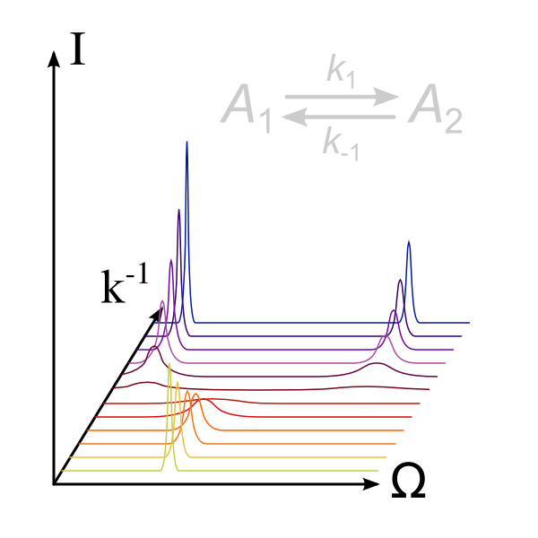

Next:
Introduction to relaxation dispersion
Up:
The specific analyses
Previous:
Stereochemistry - the sample
Contents
Index
The analysis of relaxation dispersion

Subsections
Introduction to relaxation dispersion
The modelling of dispersion data
Implemented models
Dispersion model summary
R
1
parameter optimisation
The base dispersion models
The R2eff model
Fixed relaxation period experiments
Variable relaxation period experiments
Links
The model for no chemical exchange relaxation
The analytic CPMG models
The LM63 2-site fast exchange CPMG model
The LM63 3-site fast exchange CPMG model
The full CR72 2-site CPMG model
The reduced CR72 2-site CPMG model
The IT99 2-site CPMG model
The TSMFK01 2-site CPMG model
The full B14 2-site CPMG model
The reduced B14 2-site CPMG model
The numeric CPMG models
The NS 2-site expanded CPMG model
The full NS 2-site 3D CPMG model
The reduced NS 2-site 3D CPMG model
The full NS 2-site star CPMG model
The reduced NS 2-site star CPMG model
The analytic MMQ CPMG models
The MMQ CR72 model
The numeric MMQ CPMG models
The NS MMQ 2-site model
The SQ, ZD and DQ equations
The MQ equations
The NS MMQ 3-site linear model
The SQ, ZD and DQ equations
The MQ equations
The NS MMQ 3-site model
The SQ, ZD and DQ equations
The MQ equations
The analytic
R
1
ρ
models
The M61 2-site fast exchange
R
1
ρ
model
The M61 skew 2-site fast exchange
R
1
ρ
model
The DPL94 2-site fast exchange
R
1
ρ
model
The TP02 2-site exchange
R
1
ρ
model
The TAP03 2-site exchange
R
1
ρ
model
The MP05 2-site exchange
R
1
ρ
model
The numeric
R
1
ρ
models
The NS 2-site
R
1
ρ
model
The NS 3-site
R
1
ρ
model
The NS 3-site linear
R
1
ρ
model
Relaxation dispersion optimisation theory
The relaxation dispersion auto-analysis
Dispersion curve insignificance
The relaxation dispersion space
The clustered relaxation dispersion analysis
Dispersion parameter grid search
Dispersion parameter optimisation
Relaxation dispersion parameter constraints
Relaxation dispersion diagonal scaling
Relaxation dispersion model elimination
Monte Carlo simulation elimination
Relaxation dispersion on a computer cluster using OpenMPI
To do - dispersion features yet to be implemented
Tutorial for adding relaxation dispersion models
Comparison of dispersion analysis software
Analysing dispersion in the prompt/script UI mode
Dispersion script mode - the sample script
Dispersion script mode - imports
Dispersion script mode - analysis variables
Dispersion script mode - initialisation of the data pipe
Dispersion script mode - setting up the spin systems
Dispersion script mode - loading the data
Dispersion script mode - the rest of the setup
Dispersion script mode - execution
The relaxation dispersion auto-analysis in the GUI
Dispersion GUI mode - two analyses
Dispersion GUI mode - computation time
Dispersion GUI mode - initialisation of the data pipe
Dispersion GUI mode - general setup
Dispersion GUI mode - setting up the spin systems
Dispersion GUI mode - unresolved spins
Dispersion GUI mode - dispersion setup
Dispersion GUI mode - loading the data
Dispersion GUI mode - choosing the models to optimise
Dispersion GUI mode - optimisation settings
Dispersion GUI mode - execution of the non-clustered analysis
Dispersion GUI mode - inspection of the results
Dispersion GUI mode - comparing models
Dispersion GUI mode - the clustered analysis
Dispersion GUI mode - comparison of the analyses
The
relax
user manual
(
PDF
), created 2014-11-24.